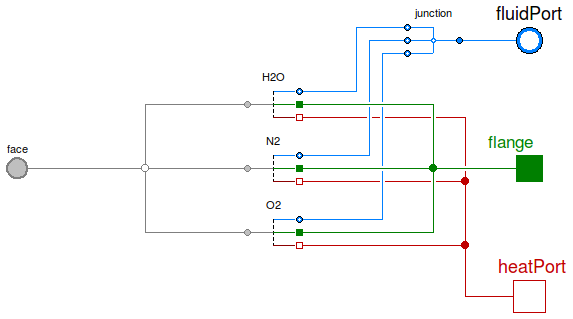
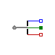

Table of Contents
- User's Guide
- Blocks
- Conditions
- Assemblies
- Regions
- Subregions
- Phases
- Species
- Connectors
- Characteristics
- Units
- Quantities
- Utilities
- Icons
Download
- Latest version (**Empty; please check back soon or contact kdavies4 at gmail.com.)
FCSys.Conditions.Adapters.MSL.Phases
Adapters for material phasesInformation
Extends from Modelica.Icons.Package (Icon for standard packages).Package Content
| Name | Description |
|---|---|
| Adapter for PEMFC anode gas between FCSys and Modelica | |
| Adapter for PEMFC cathode gas between FCSys and Modelica | |
| Adapter for graphite between FCSys and Modelica | |
| Adapter for liquid between FCSys and Modelica | |
| Base classes (generally not for direct use) |
 FCSys.Conditions.Adapters.MSL.Phases.AnodeGas
FCSys.Conditions.Adapters.MSL.Phases.AnodeGas
Adapter for PEMFC anode gas between FCSys and Modelica

Information
Extends from BaseClasses.PartialPhase (Partial adapter for a phase between FCSys and Modelica).
Connectors
| Type | Name | Description |
|---|---|---|
| FaceBus | face | FCSys face connector |
| HeatPort_b | heatPort | Modelica heat port |
| FluidPort_b | fluidPort | Modelica fluid port |
| Flange_a | flange[Axis] | Modelica translational flanges |
Modelica definition
model AnodeGas "Adapter for PEMFC anode gas between FCSys and Modelica" extends BaseClasses.PartialPhase; replaceable package Medium = Media.AnodeGas constrainedby Modelica.Media.Interfaces.PartialMedium "Medium model (Modelica)"; Species.FluidNeutral H2(redeclare package Medium = Modelica.Media.IdealGases.SingleGases.H2 (referenceChoice=Modelica.Media.Interfaces.PartialMedium.Choices.ReferenceEnthalpy.ZeroAt25C, excludeEnthalpyOfFormation=false), redeclare package Data = Characteristics.H2.Gas); Species.FluidNeutral H2O(redeclare package Data = Characteristics.H2O.Gas ( referenceChoice=Modelica.Media.Interfaces.PartialMedium.Choices.ReferenceEnthalpy.ZeroAt25C, excludeEnthalpyOfFormation=false), redeclare final package Medium = Modelica.Media.IdealGases.SingleGases.H2O); Junctions.Junction2 junction; Modelica.Fluid.Interfaces.FluidPort_b fluidPort(redeclare final package Medium = Medium) "Modelica fluid port"; Modelica.Mechanics.Translational.Interfaces.Flange_a flange[Axis] "Modelica translational flanges"; equation // H2 connect(H2.face, face.H2); connect(H2.heatPort, heatPort); connect(H2.fluidPort, junction.purePort1); // H2O connect(H2O.face, face.H2O); connect(H2O.heatPort, heatPort); connect(H2O.fluidPort, junction.purePort2); // Mixture connect(junction.mixturePort, fluidPort); connect(H2.flange, flange); connect(H2O.flange, flange); end AnodeGas;
FCSys.Conditions.Adapters.MSL.Phases.CathodeGas
Adapter for PEMFC cathode gas between FCSys and Modelica
Information
Extends from BaseClasses.PartialPhase (Partial adapter for a phase between FCSys and Modelica).
Connectors
| Type | Name | Description |
|---|---|---|
| FaceBus | face | FCSys face connector |
| HeatPort_b | heatPort | Modelica heat port |
| FluidPort_b | fluidPort | Modelica fluid port |
| Flange_a | flange[Axis] | Modelica translational flanges |
Modelica definition
model CathodeGas "Adapter for PEMFC cathode gas between FCSys and Modelica" extends BaseClasses.PartialPhase; replaceable package Medium = Media.CathodeGas constrainedby Modelica.Media.Interfaces.PartialMedium "Medium model (Modelica)"; Junctions.Junction3 junction( redeclare package Medium1 = Modelica.Media.IdealGases.SingleGases.H2O ( referenceChoice=Modelica.Media.Interfaces.PartialMedium.Choices.ReferenceEnthalpy.ZeroAt25C, excludeEnthalpyOfFormation=false), redeclare package Medium2 = Modelica.Media.IdealGases.SingleGases.N2 ( referenceChoice=Modelica.Media.Interfaces.PartialMedium.Choices.ReferenceEnthalpy.ZeroAt25C, excludeEnthalpyOfFormation=false), redeclare package Medium3 = Modelica.Media.IdealGases.SingleGases.O2 ( referenceChoice=Modelica.Media.Interfaces.PartialMedium.Choices.ReferenceEnthalpy.ZeroAt25C, excludeEnthalpyOfFormation=false), redeclare package MixtureMedium = Medium); Conditions.Adapters.MSL.Species.FluidNeutral H2O(redeclare package Data = Characteristics.H2O.Gas, redeclare final package Medium = Modelica.Media.IdealGases.SingleGases.H2O (referenceChoice=Modelica.Media.Interfaces.PartialMedium.Choices.ReferenceEnthalpy.ZeroAt25C, excludeEnthalpyOfFormation=false)); Conditions.Adapters.MSL.Species.FluidNeutral N2(redeclare package Data = Characteristics.N2.Gas, redeclare final package Medium = Modelica.Media.IdealGases.SingleGases.N2 (referenceChoice=Modelica.Media.Interfaces.PartialMedium.Choices.ReferenceEnthalpy.ZeroAt25C, excludeEnthalpyOfFormation=false)); Conditions.Adapters.MSL.Species.FluidNeutral O2(redeclare package Data = Characteristics.O2.Gas, redeclare final package Medium = Modelica.Media.IdealGases.SingleGases.O2 (referenceChoice=Modelica.Media.Interfaces.PartialMedium.Choices.ReferenceEnthalpy.ZeroAt25C, excludeEnthalpyOfFormation=false)); Modelica.Fluid.Interfaces.FluidPort_b fluidPort(redeclare final package Medium = Medium) "Modelica fluid port"; Modelica.Mechanics.Translational.Interfaces.Flange_a flange[Axis] "Modelica translational flanges"; equation // H2O connect(H2O.face, face.H2O); connect(H2O.fluidPort, junction.purePort1); connect(H2O.heatPort, heatPort); // N2 connect(N2.face, face.N2); connect(N2.fluidPort, junction.purePort2); connect(N2.heatPort, heatPort); // O2 connect(O2.face, face.O2); connect(O2.fluidPort, junction.purePort3); connect(O2.heatPort, heatPort); // Mixture connect(junction.mixturePort, fluidPort); connect(H2O.flange, flange); connect(N2.flange, flange); connect(O2.flange, flange); end CathodeGas;
 FCSys.Conditions.Adapters.MSL.Phases.Graphite
Adapter for graphite between FCSys and Modelica

Information
Extends from BaseClasses.PartialPhase (Partial adapter for a phase between FCSys and Modelica).
Connectors
| Type | Name | Description |
|---|---|---|
| FaceBus | face | FCSys face connector |
| HeatPort_b | heatPort | Modelica heat port |
| NegativePin | pin | Modelica electrical pin |
| Flange_a | flange[Axis] | Modelica translational flanges |
Modelica definition
model Graphite "Adapter for graphite between FCSys and Modelica" extends BaseClasses.PartialPhase; Species.'e-' 'e-'(redeclare package Data = Characteristics.'e-'.Graphite); Species.Solid 'C+'(redeclare package Data = Characteristics.'C+'.Graphite); Modelica.Electrical.Analog.Interfaces.NegativePin pin "Modelica electrical pin"; Modelica.Mechanics.Translational.Interfaces.Flange_a flange[Axis] "Modelica translational flanges"; equation // C connect('C+'.face, face.'C+'); connect('C+'.heatPort, heatPort); // e- connect('e-'.face, face.'e-'); connect('e-'.heatPort, heatPort); connect('e-'.pin, pin); connect(flange, 'C+'.flange); end Graphite;
 FCSys.Conditions.Adapters.MSL.Phases.Liquid
FCSys.Conditions.Adapters.MSL.Phases.Liquid
Adapter for liquid between FCSys and Modelica

Information
Extends from BaseClasses.PartialPhase (Partial adapter for a phase between FCSys and Modelica).
Connectors
| Type | Name | Description |
|---|---|---|
| FaceBus | face | FCSys face connector |
| HeatPort_b | heatPort | Modelica heat port |
| FluidPort_b | fluidPort | Modelica fluid port |
| Flange_a | flange[Axis] | Modelica translational flanges |
Modelica definition
model Liquid "Adapter for liquid between FCSys and Modelica" extends BaseClasses.PartialPhase; replaceable package Medium = Modelica.Media.Water.ConstantPropertyLiquidWater constrainedby Modelica.Media.Interfaces.PartialPureSubstance "Medium model (Modelica)"; Conditions.Adapters.MSL.Species.FluidNeutral H2O(redeclare package Data = Characteristics.H2O.Liquid, redeclare final package Medium = Medium); Modelica.Fluid.Interfaces.FluidPort_b fluidPort(redeclare final package Medium = Medium) "Modelica fluid port"; Modelica.Mechanics.Translational.Interfaces.Flange_a flange[Axis] "Modelica translational flanges"; equation // H2O connect(H2O.face, face.H2); connect(H2O.heatPort, heatPort); connect(H2O.fluidPort, fluidPort); connect(flange, H2O.flange); end Liquid;